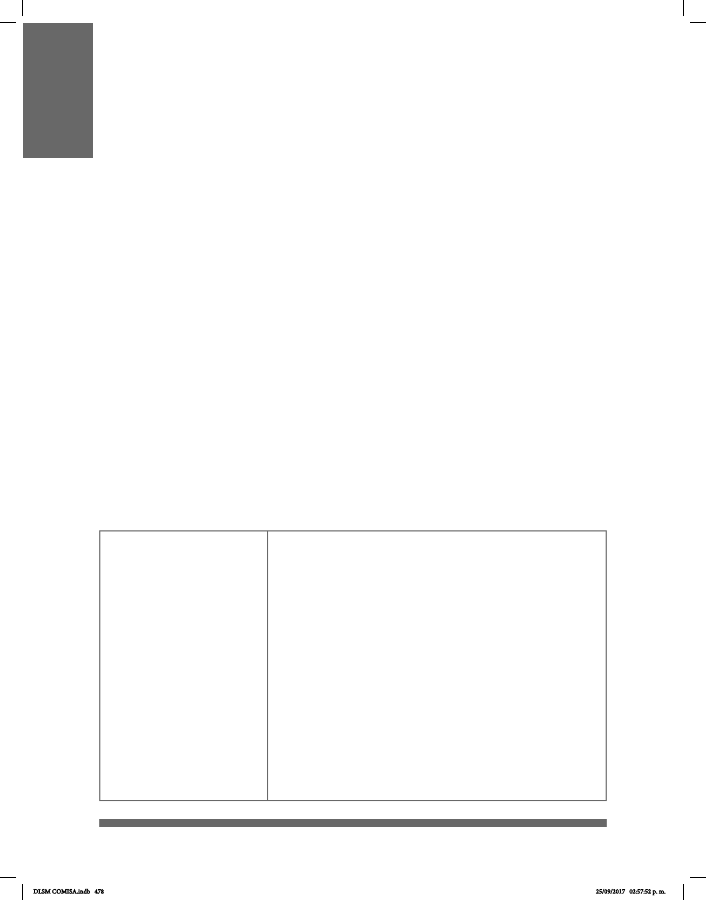

478
LEY GENERAL PARA LA INCLUSIÓN DE LAS
PERSONAS CON DISCAPACIDAD
El objetivo de la Ley General para la Inclusión de las Personas con Discapacidad,
publicada en el Diario Ocial de la Federación el 30 de mayo de 2011, es constituir
los fundamentos que propicien la inclusión de las Personas con Discapacidad en un
contexto de igualdad, y en equidad de oportunidades en cualquier ámbito de la vida.
En el capítulo tercero, referente a la educación, se propone:
• Establecer estenografía proyectada o la participación deinterpretes de LSM durante la
transmisión de programas educativos televisados.
• Garantizar que la poblacion sorda tenga acceso a la educaciòn pública y bilingue
(español y LSM).
• Implementar el reconocimiento ocial de la LSM.
• Diseñar e implementar programas de formación y certificación de intérpretes,
estenógrafos del español y demás personal especializado en la difusión y uso
conjunto del español y la LSM.
• Impulsar toda forma de comunicación escrita que facilite al sordo, el desarrollo y uso de
la lengua en forma escrita.
Con esta ley, se le da reconocimiento a la LSM como patrimonio lingüístico de la
nación.
A continuación se presentan algunos capítulos y artículos especícos de esta Ley que
contienen algunos temas que pueden resultar de tu interés en el aprendizaje que has
emprendido sobre la inclusión de las personas con discapacidad en todos los ámbitos de
la vida cotidiana.
Artículo 2.
Para los efectos de esta
Ley se entenderá por:
V. Comunicación. Se entenderá el lenguaje escrito, oral y la
lengua de señas mexicana, la visualización de textos, sistema
Braille, la comunicación táctil, los macrotipos, los dispositivos
multimedia escritos o auditivos de fácil acceso, el lenguaje sencillo,
los medios de voz digitalizada y otros modos, medios, sistemas y
formatos aumentativos o alternativos de comunicación, incluida la
tecnología de la información y las comunicaciones de fácil acceso;
VI. Comunidad de Sordos. Todo aquel grupo social cuyos
miembros tienen alguna deciencia del sentido auditivo que les
limita sostener una comunicación y socialización regular y uida en
lengua oral;
XVI. Lenguaje. Se entenderá tanto el lenguaje oral como la
lengua de señas y otras formas de comunicación no verbal;
XVII. Lengua de Señas Mexicana. Lengua de una
comunidad de sordos, que consiste en una serie de signos gestuales
articulados con las manos y acompañados de expresiones
faciales, mirada intencional y movimiento corporal, dotados de función
lingüística, forma parte del patrimonio lingüístico de dicha
comunidad y es tan rica y compleja en gramática y vocabulario
como cualquier lengua oral.
DLSM COMISA.indb 478 25/09/2017 02:57:52 p. m.